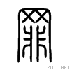

| # | Desc |
| 1 | 罪 小篆, =(辠) 说文:从辛从自(鼻子),言辠人蹙鼻苦辛之忧.秦(始皇)以辠似皇字，改为罪。臣铉等曰：言自古者以为鼻字故从自。犯法的行为,过失. Opp:功. |
| 2 | 《墨子·经上》(490--221BC):罪，犯禁也。 |
| 3 | 《孝经·五刑》(475--221 BC):子曰：“五刑之属三千，而罪莫大于不孝。 |
| 4 | 《论语·八佾》(480--350 BC):子曰：“不然，获罪于天，无所祷也” |
| 5 | 《道德经》(475--221 BC): 不曰：以求得，有罪以免耶？ |
| 6 | 《老子 河上公章句》(475--221 BC): 罪莫大于可欲。 |
| 7 | 《鶡冠子·天则》(475--221 BC. 鹖冠子是道家類著作，兼及法家與兵家，傳為戰國時期楚國隱士鶡冠子所作)): 过生于上，罪死于下。 |
2. Buddhism:
Buddhism has no concept of sin. herefore, redemption and forgiveness in the Christian sense are meaningless in Buddhism.
Buddhism emphisizes on concept of suffering, The Four Noble Truths comprise the essence of Buddha's teachings, though they leave much left unexplained. They are the truth of suffering, the truth of the cause of suffering, the truth of the end of suffering, and the truth of the path that leads to the end of suffering.
3. Materialism Socialism:
Socialism is a range of economic and social systems characterised by social ownership and democratic control of the means of production as well as the political theories and movements associated with them.
Marxism: 私有制是剥削社会（以奴隶社会、封建社会、资本主义、权贵资本主义和专制制度为代表）基本标志之一。
原始社会末期，随着生产力的不断增加，金属工具、牛耕等新的生产工具或方法被发明，直接促进了相对剩余产品的出现，对于剩余产品的不公平分配就是私有制的最早形式。《共产党宣言》的核心思想是消灭私有制.
Maoism: 斗私、批修 最早公开出現於1967年10月6日《人民日报》社论《‘斗私、批修’是无产阶级文化大革命的根本方针》. It began to emphisize on individual selfish desires/interest (私欲/私利, preQing) which causes exploits(剥削), which causes opression, which causes working class suffering.
To make use of sin to commit sin.
| # | term | Earliest Found Date | Dyna | Rel | reference |
|---|---|---|---|---|---|
| 0 | 罪 | -600 BC | 戰國 | 小篆, =(辠) | |
| 1 | 犯罪 | -551 BC | 戰國 | 孔子家語 | |
| 2 | 谢罪 | -468 BC | 戰國 | 左傳 | |
| 3 | 罪过 | -437 BC | 戰國 | 遠罪過者. 韓非子, 荀子 | |
| 4 | 吊民伐罪 | -372 BC | 戰國 | 凭吊死去之人讨伐有罪之人《孟子·滕文公下》 | |
| 5 | 得罪 | -340 BC | 戰國 | 孟子: 得罪於父 | |
| 6 | 罚不当罪 | -316 BC | 戰國 | 荀子·正论：“夫德不称位；能不称官；赏不当功；罚不当罪；不祥莫大焉。”(当：相当) | |
| 7 | 罪人 | -300 BC | 戰國 | 孟子, 禮記, 莊子, 春秋左傳 | |
| 8 | 赎罪 | -109 BC | 西漢 | 史記 | |
| 9 | 罪恶 | -109 BC | 西漢 | 史記 | |
| 10 | 负荆请罪 | -109 BC | 西漢 | 史记·廉颇蔺相如列传 | |
| 11 | 原心定罪 | 36 AD | 东汉 | 追究他心里的动机来确定有无罪过或罪过轻重 【出处】《汉书·哀帝纪》：“《春秋》之义，原心定罪。” | |
| 12 | 罪不容诛 | 36 AD | 东汉 | 罪不至死《汉书·游侠传序》班固 | |
| 13 | 罪魁祸首 | 36 AD | 东汉 | 罪不至死《汉书·游侠传序》 班固 | |
| 14 | 原罪 | 152 AD | 東漢 | 蔡中郎集 | |
| 15 | 罪愆 | 1368 AD | 明朝 | 佛 | 西遊記,三國演義(孔明 曰"此乃我之罪愆也"),封神演義 |
| 16 | 罪孽 | 1784 AC | 清朝 | 佛 | 指应当受到报应的恶行. 紅樓夢 |
| 17 | 五逆罪 | ? | 佛 | 所有恶业中最重者；《阿阇世王问五逆经》谓杀父，杀母、害阿罗汉、鬪乱众僧、起恶意於如来所 | |
| 18 | 戴罪立功 | 1919 AD | foreign Western: Redeem oneself by good service | ||
| 19 | 渎职罪 | 1919 AD | modern law: Dereliction of duty | ||
| 20 | 替罪羊 | 1919 AD | from Western英文scapegoat, Lev16:13,azazel |
חַטָּאָת (noun)
Gen 4:7 你若行得好,豈不蒙悅納,你若行得不好,罪 (חַטָּאָת)就伏在門前,他必戀慕你,你卻要制伏他.
חָטָא (verb)
Gen 20:6 神在夢中對他說,我知道你作這事是心中正直,我也攔阻了你,免得你得罪 חָטָא我,所以我不容你沾著他.
Romans 3:23 for all have sinned and fall short of the glory of God,
James 4:17 If anyone, then, knows the good they ought to do and doesn’t do it, it is sin for them.
1 John 3:4 Everyone who sins breaks the law; in fact, sin is lawlessness.
Types of Sin
羅 1:28 他們既然故意不認識神，神就任憑他們存邪僻的心行那些不合理的事，
羅 1:29 裝滿了各樣不義，邪惡，貪婪，惡毒《或作陰毒》。滿心是嫉妒，兇殺，爭競，詭詐，毒恨。
1:29 Being filled with all unrighteousness, fornication, wickedness, covetousness, maliciousness; full of envy, murder, debate, deceit, malignity; whisperers,
羅 1:30 又是讒毀的，背後說人的，怨恨神的《或作被神所憎惡的》，侮慢人的，狂傲的，自誇的，捏造惡事的，違背父母的，
1:30 Backbiters, haters of God, despiteful, proud, boasters, inventors of evil things, disobedient to parents,
羅 1:31 無知的，背約的，無親情的，不憐憫人的。
1:31 Without understanding, covenantbreakers, without natural affection, implacable, unmerciful:
羅 1:32 他們雖知道神判定，行這樣事的人是當死的，然而他們不但自己去行，還喜歡別人去行。
{kind=link}